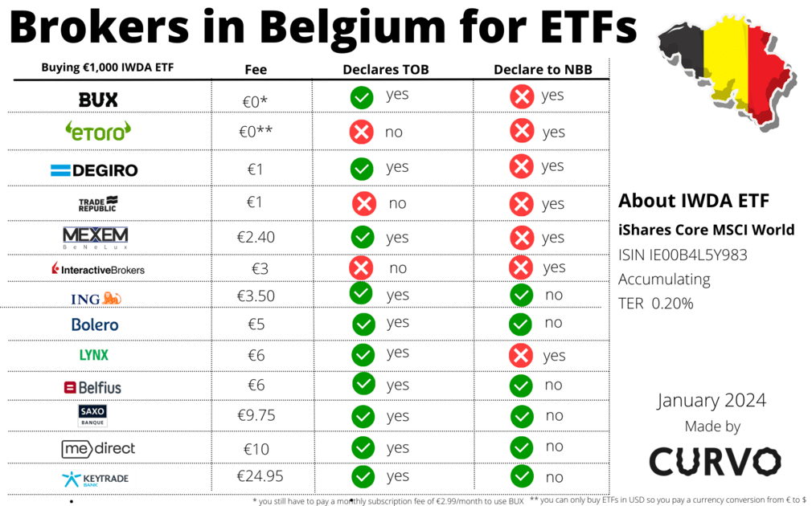
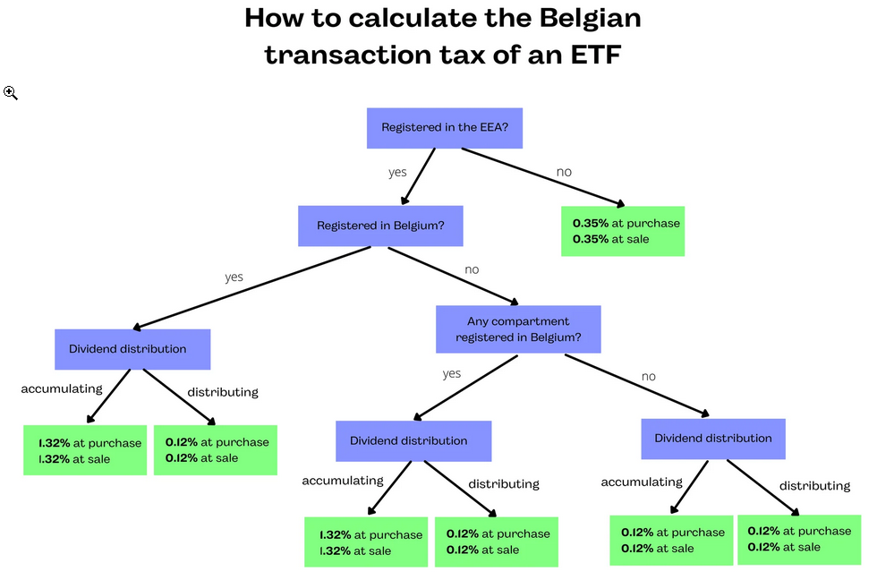
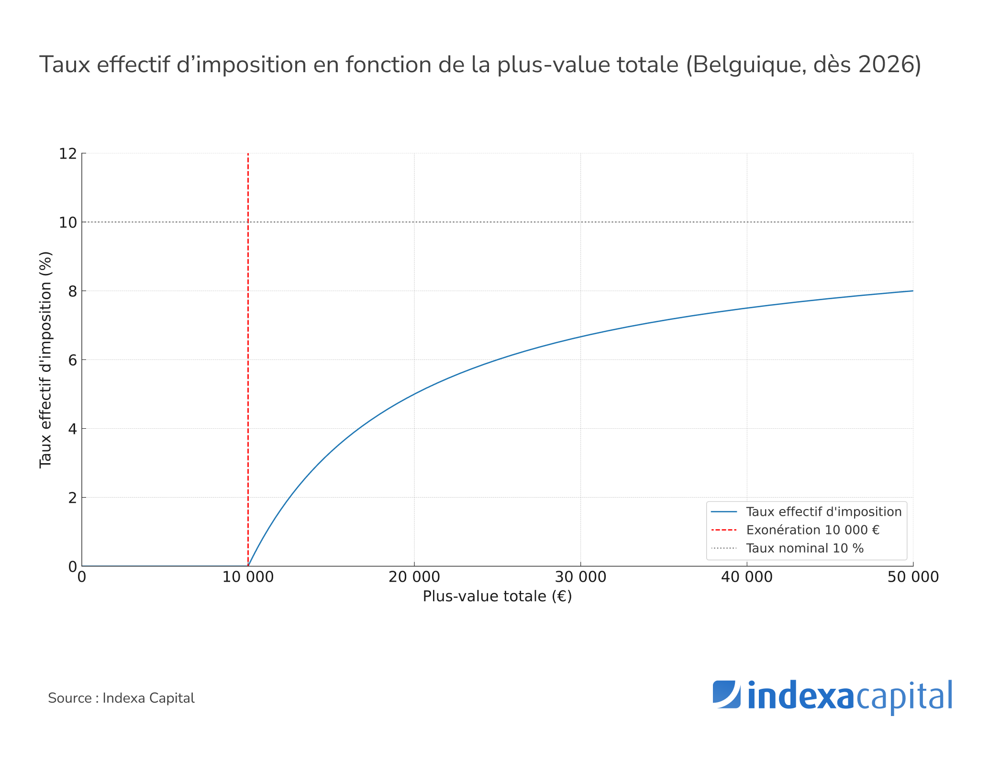

Dans les chapitres précédents, nous avons analysé le choix crucial de l'enveloppe fiscale et du courtier. Cependant, un investisseur belge averti sait que l'optimisation des frais de courtage n'est qu'une partie de l'équation. Le véritable défi réside dans la maîtrise absolue de la fiscalité locale. Utiliser des courtiers étrangers ultra-compétitifs (comme Trade Republic, Interactive Brokers ou Degiro) est une excellente stratégie pour réduire vos coûts frictionnels, mais cela vous transfère d'importantes responsabilités déclaratives.
Le fisc belge est impitoyable avec l'ignorance. Oublier de déclarer un compte ou une transaction peut entraîner des amendes qui anéantiront des années de rendements boursiers. Décortiquons ensemble, de manière exhaustive et professionnelle, toutes les obligations légales et fiscales qui incombent à l'investisseur résident belge.
1. L'Obligation Fondamentale : Déclarer son Compte à l'Étranger (CAP)
Beaucoup d'investisseurs débutants croient à tort que payer leurs taxes sur les plus-values ou les transactions suffit. C'est faux. L'État belge exige avant toute chose de cartographier votre patrimoine. Si vous ouvrez un compte chez un courtier non-belge (Degiro, Trade Republic, eToro, IBKR), vous avez une double obligation légale incontournable.
- La déclaration au Point de Contact Central (PCC) : Cette démarche s'effectue une seule fois dans la vie de votre compte, auprès de la Banque Nationale de Belgique (BNB). Vous devez vous connecter via itsme, déclarer l'IBAN du compte, la dénomination exacte de la banque (ex: Trade Republic Bank GmbH) et le pays hébergeant les fonds.
- La déclaration annuelle à l'IPP (Tax-on-web) : Chaque année, lors de votre déclaration d'impôts sur les revenus, vous avez l'obligation absolue de cocher la case du Cadre XIII confirmant que vous possédez un compte à l'étranger. Omettre cette étape, alors que le fisc est automatiquement informé de l'existence de votre compte via les accords d'échange d'informations (CRS), déclenchera inévitablement un contrôle fiscal.
2. La Taxe sur les Opérations de Bourse (TOB)
La TOB est l'impôt de flux par excellence en Belgique. Contrairement à une taxe sur les bénéfices, elle s'applique à chaque mouvement : chaque achat et chaque vente de titres financiers (actions, obligations, ETF), indépendamment de la réalisation d'une plus-value ou d'une moins-value.

La grande complexité de la TOB réside dans l'application de taux variables, qui dépendent de la nature du titre et de son lieu d'enregistrement. Voici la nomenclature actuelle :
- Le taux de 0,12 % (Plafond : 1.300 €) : S'applique aux obligations individuelles et aux ETF distributifs (fonds versant des dividendes).
- Le taux de 0,35 % (Plafond : 1.600 €) : C'est le taux central pour le "Stock Picking". Il s'applique à l'immense majorité des actions individuelles (Apple, LVMH, etc.) ainsi qu'aux ETF de capitalisation qui ne sont pas spécifiquement enregistrés en Belgique.
- Le taux de 1,32 % (Plafond : 4.000 €) : Un taux hautement dissuasif appliqué principalement aux fonds de capitalisation enregistrés en Belgique, ciblant souvent les produits bancaires classiques.

Attention aux retards de TOB ⚠️
Si votre courtier étranger ne prélève pas la TOB, vous avez jusqu'au dernier jour ouvrable du deuxième mois suivant la transaction pour la déclarer et la payer au SPF Finances. Le retard entraîne une amende de 50 € par semaine (plafonnée à 2.600 €) et des intérêts de retard.
3. Le Précompte Mobilier sur les Dividendes (et la Double Imposition)
La fiscalité belge sur les dividendes est lourde : le taux standard du précompte mobilier s'élève à 30%. Cependant, le véritable piège pour l'investisseur international est la double imposition.
Si vous investissez dans des entreprises américaines ou françaises, le pays d'origine de l'entreprise prélèvera une taxe à la source. Prenons l'exemple des États-Unis : grâce au formulaire W-8BEN, la taxe à la source US est réduite à 15%. Néanmoins, l'État belge exigera ensuite ses 30% sur le montant net frontière (les 85% restants). Le taux d'imposition réel grimpe ainsi à plus de 40% !
Le cas pratique : Obtenir la réduction W-8BEN 📝
Rassurez-vous, vous n'avez pas besoin d'envoyer un courrier recommandé à l'IRS américain. Aujourd'hui, les courtiers modernes (comme Trade Republic, Interactive Brokers ou Degiro) ont entièrement numérisé ce processus. Lors de l'ouverture de votre compte ou dans les paramètres de votre profil, un simple formulaire numérique permet de certifier que vous n'êtes pas résident fiscal américain. Cette démarche prend trente secondes et active instantanément la convention préventive de double imposition.
L'Exonération de 833 € : C'est la bouée de sauvetage fiscale. L'État belge autorise l'exonération du précompte mobilier sur une première tranche de dividendes (actuellement 833 € par an). Cette mesure s'applique exclusivement aux actions individuelles (Stock Picking) et exclut formellement les ETF ou les fonds communs. Si vous utilisez un courtier belge, vous devrez réclamer ce remboursement via votre déclaration fiscale. Avec un courtier étranger qui n'a pas retenu la taxe belge, vous omettrez simplement de déclarer cette première tranche.
4. La Nouvelle Ère : Taxe sur les Plus-Values (Réforme 2026)
Pendant des décennies, la Belgique fut un havre de paix pour l'investisseur "en bon père de famille" avec une exonération totale des plus-values sur actions. Cette ère est révolue depuis la réforme fiscale de 2026, qui a introduit une imposition structurée sur l'enrichissement boursier.

Le législateur a mis en place un système de franchise pour protéger les petits portefeuilles. Actuellement, les premiers 10 000 € de plus-values réalisées annuellement sont exonérés d'impôt. Toutefois, chaque euro de bénéfice encaissé au-delà de ce plafond de 10 000 € subit une taxation stricte de 10%. Il est vital de comprendre que cette taxe s'applique lors de la réalisation de la plus-value (la vente), et non sur les plus-values latentes (non vendues).
Le spectre de la requalification : Êtes-vous un spéculateur ? ⚖️
Même avec l'instauration de la taxe de 10% sur les plus-values, le fisc belge conserve son arme nucléaire : la requalification de vos gains. Si l'administration estime que vous n'agissez plus en "bon père de famille" (gestion prudente et pérenne), vos plus-values boursières peuvent être requalifiées en "revenus divers" (taxés à 33%) voire en "revenus professionnels" (taxés jusqu'à 50%). Les comportements qui déclenchent les foudres du fisc incluent : le recours excessif à l'effet de levier (Margin), l'utilisation de produits dérivés complexes, le day-trading frénétique, ou le fait d'emprunter pour investir. La stratégie du Quality Investing (acheter d'excellentes entreprises et les conserver très longtemps) est le bouclier parfait contre cette requalification.

Il est très instructif de mettre ce nouveau paradigme belge en perspective avec nos voisins français. En France, sur un Compte-Titres Ordinaire, l'investisseur fait face à une imposition globale lourde, devant arbitrer entre une Flat Tax implacable de 30% ou le barème progressif de l'impôt sur le revenu. Malgré la réforme de 2026, la Belgique conserve un attrait fiscal indéniable grâce à sa franchise de 10 000 € et son taux modéré de 10% au-delà.
5. Les Taxes "Cachées" : Reynders & TCT
Pour être parfaitement exhaustif, deux autres mécanismes fiscaux ciblés guettent les investisseurs :
- La Taxe Reynders : Ce piège fiscal concerne principalement les investisseurs en obligations. Si vous réalisez une plus-value sur un fonds (ETF inclus) composé à plus de 10% de créances ou d'obligations, la partie du gain issue des intérêts sera taxée à 30%. Les courtiers étrangers ne la calculent jamais, vous laissant l'entière responsabilité de la déclaration pour éviter un prélèvement forfaitaire punitif du fisc.
- La Taxe sur les Comptes-Titres (TCT) : Conçue pour cibler les patrimoines importants, cette taxe prélève 0,15% annuel sur la valeur globale d'un compte-titres dès lors que sa valeur moyenne (calculée sur quatre points de contrôle annuels) excède le seuil de 1 000 000 €.
L'astuce avancée : Les ETF Synthétiques (Swap) 🧠
Pour contourner légalement la lourdeur fiscale de la taxe Reynders, certains investisseurs belges pointus se tournent vers les ETF dits "synthétiques". Au lieu de détenir physiquement les obligations, le fonds utilise des produits dérivés (des swaps) pour répliquer la performance de l'indice obligataire. Puisque le fonds ne détient pas formellement de créances dans son bilan au sens strict de la loi belge, il échappe souvent à l'application de la Taxe Reynders. Une notion très spécifique, mais qui fait la différence pour les portefeuilles optimisés.
🔑 Ce qu'il faut retenir
Un investisseur belge serein déclare ses comptes étrangers (BNB/Impôts), calcule sa TOB à chaque transaction, et anticipe la double imposition sur ses dividendes.
Gardez une approche Buy & Hold (Quality Investing) pour prouver votre statut de "bon père de famille", et pilotez vos reventes stratégiquement pour optimiser la nouvelle franchise de 10 000 € sur les plus-values de 2026.